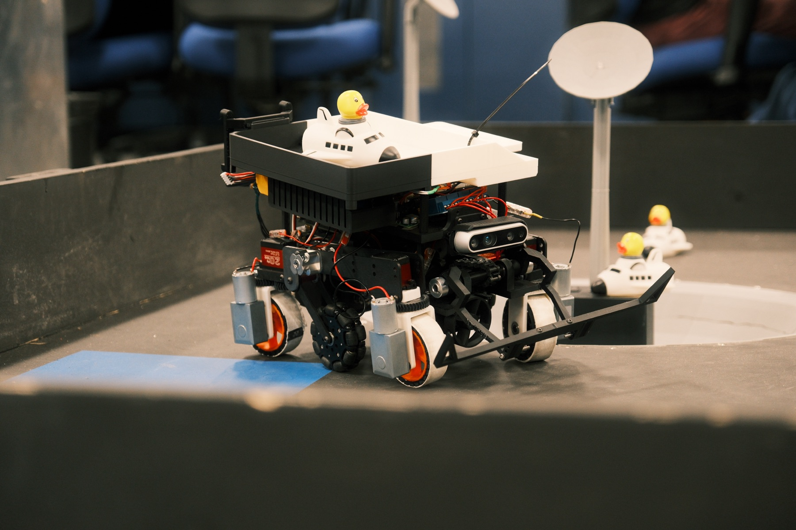
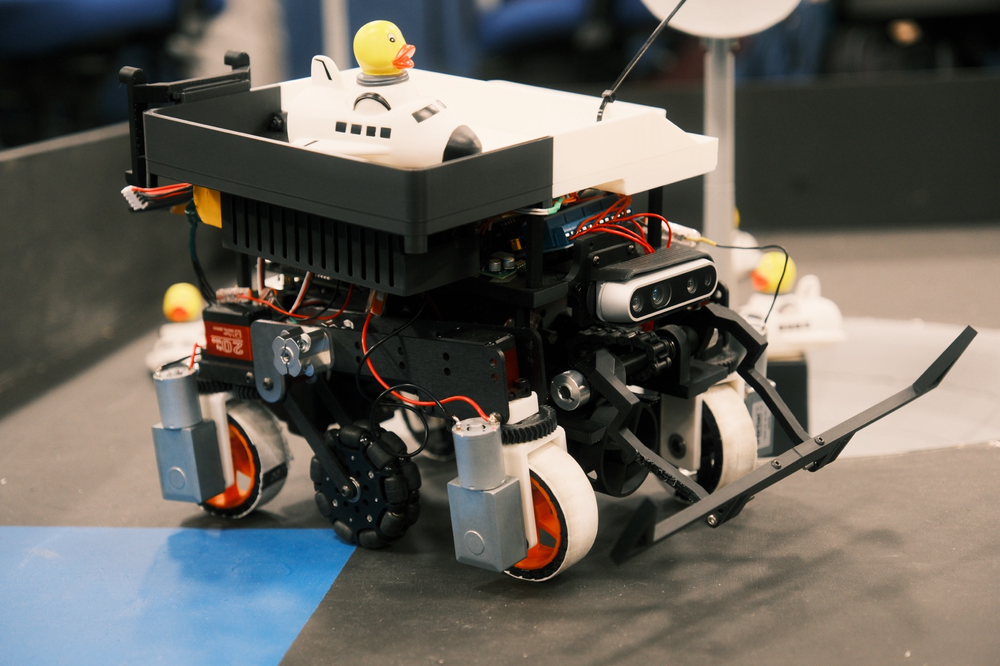

← All projects

IEEE SoutheastCon Hardware Competition 2026 · September 2025 – 2026
Lunar ResQ — autonomous rescue and communication robot and drone.
Developing a multi-robot rescue system enabling real-time communication and coordination between an autonomous ground rover and an aerial drone.
The mission: locate and rescue targets across a crater-strewn lunar course, with both robots working together under a strict 3-minute mission window.
Highlights
- Implementing ROS 2 Jazzy navigation and SLAM relying solely on depth camera and IMU fusion
- Building a behavior-tree framework for synchronized multi-agent task execution within 3-minute mission constraints
- Simulating crater traversal and cooperative path optimization in Gazebo and Isaac Sim
Rover · with payload

Rover · side view
